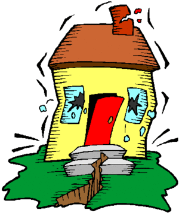
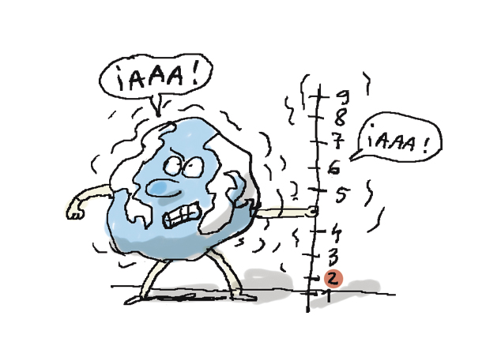

Escala de los sismos |
|
Escala de intensidad o de MercalliEs una evaluación cualitativa de la clase de daños causados por un sismo, debe su nombre al físico italiano Giuseppe Mercalli. Generalmente, un gran terremoto producirá valores de mayor intensidad que uno pequeño pero hay otros factores capaces de afectar como la cantidad de energía liberada, la distancia del epicentro, la profundidad focal del sismo, la densidad de la población, la geología local del área, el tipo de construcción de los edificios así como la duración del sacudimiento. En 1902, Mercalli propuso una tabla, que fue posteriormente modificada en 1931 y desde entonces se ha llamado escala Modificada de Mercalli (MM). Consta de 12 grados de intensidad donde se muestran también las características de cada grado, denotado por números romanos del I al XII. 
Escala de magnitud o de RichterFue ideada en 1935 por el sismólogo Charles Richter y los valores van de 1 al extremo abierto. La medición es cuantitativa, mide la energía sísmica liberada en cada sismo independientemente de la intensidad. Se basa en la amplitud de la onda registrada en un sismograma. Es la manera más conocida y más ampliamente utilizada para clasificar los sismos. Teóricamente no tiene límite, pero un 9 en esta escala equivaldría a un Grado XII de Mercalli, es decir "destrucción total". El mayor terremoto en la historia conocida, tuvo lugar en Chile, en 1960, alcanzando los 9.5 grados Richter. 
|
|